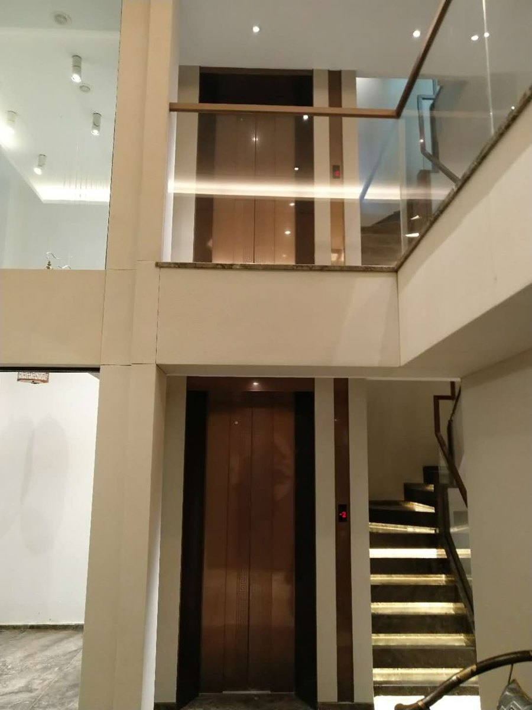

不是老板宣传页，而是家用电梯现场经验和服务方式的说明。

关于俞工
俞世康，客户习惯称俞工。2017年进入电梯行业，长期参与家用电梯现场测量、井道条件判断、方案设计、安装协调和售后服务。
他关注的不是单纯卖一台电梯，而是帮助客户提前判断：房屋能不能装、怎么装更合理、后期使用是否省心。

精准测量，确保方案可行

结合结构与需求，优化方案

检查土建结构与预留部件

标准施工，重视每个细节
电梯不只是设备，更关系到家人每天使用的安全与舒适。我会先把现场限制和方案边界说清楚，再帮助客户做选择。
不脱离现场谈尺寸，不用低价吸引咨询，不把不确定的条件说成确定结论。
电话联系俞工